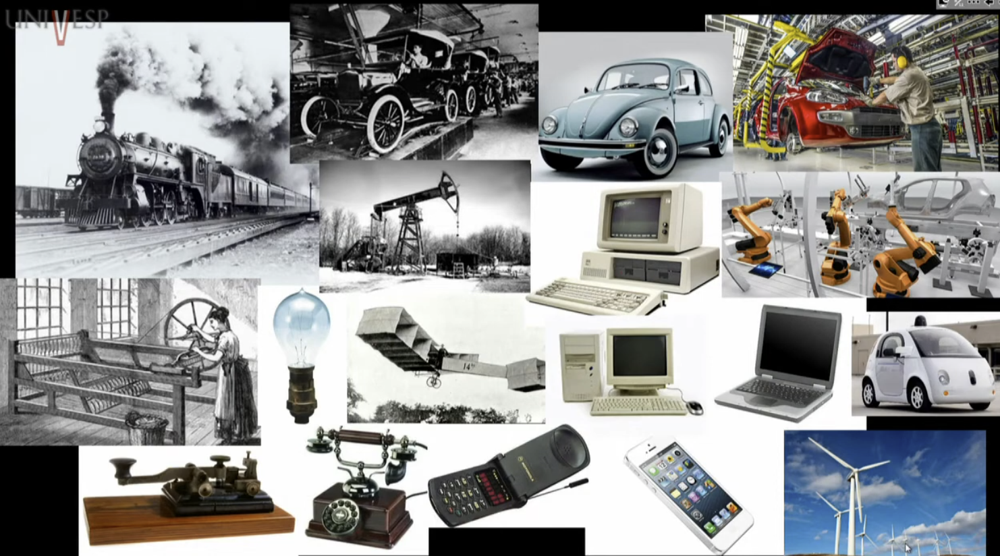

Disciplinas
GESTÃO DE INOVAÇÃO E DESENVOLVIMENTO DE PRODUTOS Concluído
Materiais
Vídeo 1 - Economia II – Aula 10 - Estratégias Competitivas II: Diferenciação e Inovação (UNIVESP) sendProf° ministrante: Roberto Alexandre Zanchetta Borghi
Plano de Aula
- Vantagem competitiva
- Diferenciação de produto
- Inovação:
- Tipo: produto e processo
- Grau: radical e incremental
- Inovação: custos, ganhos e redes
Vantagem competitiva
- Diferencial de uma empresa perante seus concorrentes
- Fator preço x fator qualitativo
- Rentabilidade: giro x margem
- Exemplos: custos menores, marca, localização, design, qualidade do produto/serviço/atendimento e etc.
- Competitividade como processo dinâmico: clientes, fornecedores, concorrentes, potenciais entrantes, produtos substitutos, coordenação dos recursos da empresa e etc.
Diferenciação de produto
Produto ou serviço é percebido pelos consumidores como diferente de seus concorrentes, o que permite à empresa ofertante fixar preço para aquele produto ou serviço acima do preço de mercado
Atributos de diferenciação: especificações técnicas, desempenho, durabilidade, estética, marca, assistência técnica e etc.
Formas predominantes de diferenciação: estilo/tipo, localização e qualidade
Tipos de diferenciação: vertical e horizontal
Inovação
"Destruição criativa": inovação como processo central da dinâmica concorrencial
Fonte de competitividade (e diferenciação) para as empresas: lucros extraordinários temporários
Mudança substancial de custo ou qualidade que permite:
- Criação de mercados totalmente novos
- Conquista de parcela maior de mercado
- Própria sobrevivência no mercado de atuação
- Inovação de produto:
- Desenvolvimento de novos produtos/serviços ou melhoria significativa de produtos/serviços já existentes
- Inovação de processo:
- Mudança nas formas e métodos de produção ou comercialização
- Maior eficiência na utilização dos recursos e/ou menores custos
- Inovação radical:
- Altera drasticamente o modo de consumo ou produção de produtos ou serviços
- Provoca ruptura de paradigma em um ou mais setores ou segmentos de mercado
- Propicia elevado poder de mercado
- Inovação incremental:
- Reflete melhorias ou agregação de algo novo em produtos ou serviços existentes
- Aumenta o benefício percebido pelo consumidor sem provocar uma mudança substancial no modo de consumo ou produção

Inovação: custos, ganhos e redes
- Custos elevados e resultados incertos:
- Recursos: financeiros, humanos, técnicos, tempo etc. (custos, inclusive de oportunidade, elevados)
- Incerteza, ciclo de implantação e difusão no mercado, concorrência e imitação
- Grau de inovação maior: riscos maiores, potenciais ganhos também maiores (fracasso x lucros elevados)
- Impactos microeconômicos da inovação:
- Tecnologia de produção, custos, elasticidade da demanda, barreiras à entrada, estrutura de mercado, competitividade, produtividade, externalidade e etc.
- Novas empresas x grandes empresas:
- Empreendedorismo e ruptura
- Gastos contínuos/rotineiros em P&D e incremento
- Redes de inovação e cooperação:
- Empresas (alianças estratégicas)
- Universidades
- Centros de pesquisa e tecnologia
- Sistema educacional e de financiamento
- Esforços públicos e privados
Síntese
- Vantagem competitiva: fator preço e fatores qualitativos
- Diferenciação e determinação de preço: poder de mercado e diversidade de produtos
- Inovação como atributo da dinâmica concorrencial e fonte de lucros extraordinários
- Tipos e graus de inovação: produto, processo, radical e incremental
- Inovação: custos elevados diante de resultados incertos
- Redes de inovação: esforços conjuntos e a dinâmica empresarial de inovação